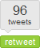
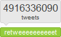
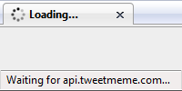
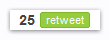
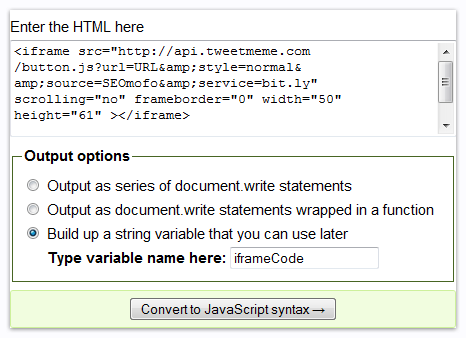

If you’re using the TweetMeme Retweet Button on your blog or website, and you’ve noticed it’s been slowing down your page load times, then this article is for you. I will discuss two common ways to install the Retweet Button–through the WordPress plugin and through adding a custom <script> element to your HTML code–and I will explain why these two implementation methods are probably preventing your web pages from loading as quickly as they could be. Then I will show you how to install the TweetMeme Retweet Button in a way that doesn’t affect your page speed. My solution is not limited to the TweetMeme button, so a reasonably-intelligent person can apply these same steps to any iframe-based social media smart buttons.
Most bloggers use social media networks and micro-blogging sites like Twitter to promote their content. One of the easiest ways to do that is to install social media widgets on your blog and hope that your readers are grateful enough to share your content with their friends. I mean…it’s the least they can do, considering how many hours of your personal time you put into your blog posts. *ahem* Right?
The problem with some of these “smart” social media widgets (i.e., the ones that display a number of votes, diggs, sphinns, etc.) is that they usually require your page to make several HTTP requests for external files. Due to the way these widgets are normally installed, your page can’t finish loading until all of these requests have been answered. Ultimately, it doesn’t do you much good to put these things on your blog, if the result is a sluggish website that drives your readers away.
One social media widget that has become very popular is the retweet button from TweetMeme.com. For most of you, it looks something like this:

When you write super-amazing content like I do, your TweetMeme buttons tend to look more like this:

But the purpose of today’s article is to show you how to prevent your retweet buttons from ending up like this:

As soon as you realize my animated .gif isn’t actually going to load anything, we can continue…
To fully understand the solution I propose in this article, you should probably read the next two sections, which explain why the WordPress plugin sucks…and why the customized <script> option sucks. However, you’re more than welcome to skip straight to the solution↓.
Why does the TweetMeme WordPress plugin suck?
The TweetMeme Retweet Button plugin for WordPress has a couple of useful features, but ironically, inserting the Retweet Button code into your posts is not one of them. The features you might consider using are the TweetMeme Analytics interface, the option to automatically ping TweetMeme.com when you post new content, and the option to insert the Retweet button into your RSS feed pages. Unfortunately, the code that the WordPress plugin writes into your HTML source code is NOT usable for what we need to do. Therefore, if you keep the plugin activated, be sure to go to the TweetMeme settings and change the Position option to Manual.
Also, you will NOT be able to use the tweetmeme(); function in your WordPress templates, because it writes the same unusable HTML code. Basically, our objective for this plugin or any other TweetMeme plugin is to prevent it from inserting the <iframe> markup directly into your HTML. Here is an example of the useless code that the WordPress plugin wants to crap into your page:
<div class="tweetmeme_button"> <iframe src="http://api.tweetmeme.com/button.js?url=http%3A%2F%2Fwww.seomofo.com%2Fwordpress%2Ftweetmeme-retweet-button.html&source=SEOmofo&style=normal&service=bit.ly" height="61" width="50" frameborder="0" scrolling="no"></iframe> </div>
You DON’T want this <iframe> anywhere in your HTML, for several reasons, but most-importantly because: iframes block your page from loading. We’re going to work around this by using JavaScript to write the <iframe> code into a container element, after the page is done loading. We’ll get to that in a second, but first you need to kill any plugins that put the <iframe> code directly into your pages’ HTML.
Why Does the WordPress Plugin FAIL?
Here is an overview of how the WordPress plugin works, and how it eventually forces your pages to wait for the TweetMeme <iframe> to load.
- WordPress builds an
<iframe>(server-side) and inserts it into the HTML code of a page. - Server sends the page to the client. (e.g., a visitor’s web browser)
- Web browser sees the
<iframe>and requests itssrcfile. Browser waits forsrcfile to load completely before firing the onload event. - Your page can’t finish loading until the Retweet Button finishes loading.
First Steps for TweetMeme WordPress Plugin Users
Good Idea: Go to the TweetMeme settings menu and change the Position option to Manual.
Better Idea: Uninstall or deactivate the TweetMeme Retweet Button plugin. (fewer plugins = faster page speeds)
Why does the TweetMeme button’s custom <script> suck?
The second method for installing the TweetMeme Retweet Button is to insert a <script> element into your HTML code, at the point where you want the button to appear. For details about this method, you can view the TweetMeme Button documentation from TweetMeme.com. Or…just keep reading.
At a bare minimum, you would need to include the <script> element that calls the JavaScript file, button.js, from TweetMeme’s servers. In addition, there are 4 parameters that you could use to customize your Retweet Button. I’ll explain them briefly:
- tweetmeme_url – the URL your retweet will link to on Twitter. By default, the button uses the URL of the page it’s on, so you don’t need to include this parameter unless you’re embedding the retweet button on Page A, but you want your Twitter status update to link to Page B. (For example, this would be handy for adding a retweet button to your RSS feed.)
- tweetmeme_source – the Twitter @username that will appear after the “RT.” By default, this parameter is set to “tweetmeme,” which results in retweets like this: RT @tweetmeme TITLE URL
- tweetmeme_style – choose between normal or compact button design. Default is normal. The compact button looks like this (I added the drop shadow):
 - tweetmeme_service – choose one from TweetMeme’s list of URL-shortening services. Default is ow.ly.
The following code is an example of the kind of crap that the script method might use. Theoretically, you would paste this directly into your pages’ HTML code.
<script type="text/javascript"> tweetmeme_url = 'http://yoururl.com'; // only necessary if different from current URL tweetmeme_source = 'SEOmofo'; // Twitter @username that will be retweeted tweetmeme_style = 'compact'; // only add this line if you want to create a smaller button tweetmeme_service = 'bit.ly'; // URL shortening service you want to use </script> <script type="text/javascript" src="http://tweetmeme.com/i/scripts/button.js"> </script>
Are we going to be using the custom <script> parameters? No, not exactly. But you need to be familiar with them for our final method of installing the retweet button. We won’t be using them within <script> tags, but we will be using them to create a custom src URL for our iframe.
The reason why we DO NOT want to use these <script> tags is the same reason we don’t want to use the <iframe> code directly: they block the page from loading. When a web browser is rendering the page, it will see the <script> tag that references the button.js file and immediately send a request for it. To make things worse, the button.js script uses document.write(); statements to insert the <iframe> code into your document…and then we’re back to square one, waiting for the <iframe> to load. In other words, this method for installing the retweet button is actually worse than the WordPress plugin, because instead of building the <iframe> code on the server side, it has to request button.js (client side) and wait for it to build the <iframe> for you.
Why Does the Custom <script> FAIL?
Here is an overview of how the <script> method of installing the button works, and how it eventually forces your page to wait for the <script> to build your <iframe> code and then waits for the TweetMeme <iframe> content to load.
- Server inserts custom
<script>elements into the HTML code of a page. - Server sends the page to the client. (e.g., a visitor’s web browser)
- Web browser sees the
<script>and requests itssrcfile. Browser waits forsrcfile to load. - Src file inserts an
<iframe>into our document. - Web browser sees the
<iframe>and requests itssrcfile. Browser waits forsrcfile to load completely before firing the onload event. - Your page can’t finish loading until the Retweet Button finishes loading.
The Solution
Load the TweetMeme Button AFTER the Page Loads
Despite all the bad things I’ve said about iframes and scripts, we’re actually going to use both in our implementation. The difference is we’re going to host our own JavaScript, and we’re not going to insert the TweetMeme button’s <iframe> into our document until after everything else is finished loading.
STEP 1: Build Your Button’s <iframe> Code
Instead of relying on WordPress or button.js to build our <iframe> code, we’re going to do it ourselves. Don’t worry, it’s much easier than it sounds. To accomplish this, we first need to understand what button.js actually does. Here is the JavaScript code after I’ve formatted it and added comments to it. FYI, I’m not an expert on JavaScript, so my interpretation of this code might be totally wrong. But if you’ve read this far…there’s no turning back now, sucker!
// Get page URL
var _url = window.location.href;
// Remove illegal characters
var _url = _url.replace(/((?:\?|&)?fbc_receiver=.+)?(?:#.*)?$/, "");
// Convert your custom script parameters into local JavaScript variables.
// Make sure they are strings and escape illegal characters.
var url = escape(typeof tweetmeme_url == "string" ? tweetmeme_url : typeof TWEETMEME_URL == "string" ? TWEETMEME_URL : _url).replace(/\+/g, "%2b");
var source = typeof tweetmeme_source == "string" ? escape(tweetmeme_source) : typeof TWEETMEME_SOURCE == "string" ? escape(TWEETMEME_SOURCE) : false;
var style = typeof tweetmeme_style == "string" ? escape(tweetmeme_style) : typeof TWEETMEME_STYLE == "string" ? escape(TWEETMEME_STYLE) : "normal";
var service = typeof tweetmeme_service == "string" ? escape(tweetmeme_service) : typeof TWEETMEME_SERVICE == "string" ? escape(TWEETMEME_SERVICE) : false;
// Apparently, if your URL-shortening service offers an API, you can
// configure it with the tweetmeme_service_api parameter. I couldn't
// find any documentation on this parameter from TweetMeme, so I'm not
// sure about this.
var service_api = typeof tweetmeme_service_api == "string" ? escape(tweetmeme_service_api) : typeof TWEETMEME_SERVICE_API == "string" ? escape(TWEETMEME_SERVICE_API) : false;
// I didn't see any TweetMeme documentation about the tweetmeme_alias
// parameter, so I have no idea what this does.
var alias = typeof tweetmeme_alias == "string" ? escape(tweetmeme_alias) : typeof TWEETMEME_ALIAS == "string" ? escape(TWEETMEME_ALIAS) : false;
// This is our iframe src URL before we've added our custom parameter
// values to it in the form of a query string.
var src = "http://api.tweetmeme.com/button.js";
// This is a poorly-programmed way of setting the height and width of
// our iframe. (BTW...I tried using the rednose style but nothing
// happened. It looked just like the default style.)
switch (style) {
case "compact":
var h = 20;
var w = 90;
break;
case "rednose":
var h = 61;
var w = 50;
break;
default:
var h = 61;
var w = 50;
break;
}
// Add our page URL to the src URL
src += "?url=" + url;
// Add our button style option to the src URL
src += "&style=" + style;
// If we defined a value for the tweetmeme_source parameter,
// then add it to the src URL.
if (source != false) {
src += "&source=" + source;
}
// If we defined a value for the tweetmeme_service parameter,
// then add it to the src URL.
if (service) {
src += "&service=" + service;
}
// If we defined a value for the tweetmeme_service_api parameter,
// then add it to the src URL.
if (service_api) {
src += "&service_api=" + service_api;
}
// If we defined a value for the tweetmeme_alias parameter,
// then add it to the src URL.
if (alias) {
src += "&alias=" + alias;
}
// Insert iframe code into our page
// (where we placed the script tags).
document.write('<iframe src="'+src+'" height="'+h+'" width="'+w+'" frameborder="0" scrolling="no"></iframe>');
// Inexplicably reset this huge fuckin' pile
// of redundant JavaScript variables.
tweetmeme_url = null;
TWEETMEME_URL = null;
tweetmeme_source = null;
TWEETMEME_SOURCE = null;
tweetmeme_service = null;
TWEETMEME_SERVICE = null;
tweetmeme_service_api = null;
TWEETMEME_SERVICE_API = null;
tweetmeme_style = null;
TWEETMEME_STYLE = null;
As you can see, the button.js script really doesn’t do much. All we really have to do is take this <iframe> code and replace the variables with our own values:
<iframe src="src" scrolling="no" frameborder="0" width="w" height="h" ></iframe>
To build your src variable, you can follow this pattern:
- Start with http://api.tweetmeme.com/button.js
- Add ?url= followed by your page URL (for right now, just use URL as a placeholder)
- Add &style= followed by either normal or compact.
- Add &source= followed by your Twitter username.
- Add &service= followed by a URL-shortening service from this list:
- bit.ly
- awe.sm
- cli.gs
- digg.com
- is.gd
- tinyurl.com
- tr.im
- su.pr
- ow.ly
- twurl.nl
- If you have a URL-shortener API, add &service_api= followed by your API key. (Only available for awe.sm, cli.gs, digg.com, and su.pr services. I’m not sure if you’re really supposed to put your API key here or not. Frankly, I just made that up.)
Your completed src variable should end up looking something like this:
http://api.tweetmeme.com/button.js?url=URL&style=normal&source=SEOmofo&service=bit.ly
Now set the w and h attributes.
For a normal style button: width="50" height="61"
For a compact style button: width="90" height="20"
Now that you have your values for the variables src, w, and h, you can plug them back into your <iframe> code, which should now look something like this:
<iframe src="http://api.tweetmeme.com/button.js?url=URL&style=normal&source=SEOmofo&service=bit.ly" scrolling="no" frameborder="0" width="50" height="61" ></iframe>
STEP 2: Create a Container for Your Retweet Button
In Step 1, we created our own <iframe> code. Our goal is to store that code in a JavaScript function that we can call after the onload event is triggered. In order for our JavaScript function to work, our web page needs to have a containing element ready to insert the <iframe> code into. This element should have a unique id attribute assigned to it, so that we can tell our JavaScript function exactly where to put the iframe. Here is an example: <div id="tm_button"></div>
If you’re using WordPress, you have several options for getting your container <div> into your page code. I’ve mentioned a few examples below. If you’re not using WordPress or you already know how to do this, then go to Step 3.
- Add it to a select number of posts, by simply typing the code directly into the HTML view of your Edit Post screen.
- Add it to your WordPress theme’s template files, which would add it to all web pages that use that template (e.g., single posts, pages, archives, etc.)
- Add it as a plain text widget in your sidebars.
- Add it to a WordPress hook, by writing a function in your theme’s functions.php file.
- Add it to a Thesis hook, by writing a function in your custom_functions.php file (only available to those of you using the Thesis WordPress theme).
- Create your own WordPress plugin that adds it to certain types of pages.
For Thesis Theme Users
For those of you who are using Thesis, you can use the following example, which is what I’m currently using. It inserts the <div> into all my posts, but not previews of unpublished posts. If you want to customize it in other ways, check out the full list of WordPress conditional tags.
// Define a function that adds your TweetMeme container <div>
// to all posts except for when you're just previewing it.
if (!function_exists('addTMContainer')) {
function addTMContainer() {
if (is_single() && !is_preview()) {
?>
<div id="tm_box"></div>
<?php }
}
}
// Hook your TweetMeme container to a Thesis hook
add_action('thesis_hook_before_headline', 'addTMContainer');
Here is the CSS I’m using to position the <div>:
/* Make room for my button next to the page title */
div.headline_area{position:relative; margin-right:6em;}
/* Move my button to the top right corner of .headline_area */
#tm_box{position:absolute; right:-6em;}
STEP 3: Define Your <iframe> Code as a JavaScript Function
There are several ways to do this, but I’ll show you what I consider the easiest one. Copy your HTML code and paste it into this tool that converts HTML into JavaScript. Select the option that says Build up a string variable that you can use later and give your variable a name. I’ll call mine iframeCode.

Copy the converted code and paste it into whatever program you use for editing JavaScript/HTML/plain text. Here is what my code looks like now:
var iframeCode=""; iframeCode += "<iframe src=\"http:\/\/api.tweetmeme.com\/button.js?url=URL&style=normal&source=SEOmofo&service=bit.ly\" scrolling=\"no\" frameborder=\"0\" width=\"50\" height=\"61\" ><\/iframe>";
If you remember…we still have a placeholder variable where our page URL is supposed to go. We can’t hard-code an actual URL here, because this JavaScript function has to work for any page that calls it. So instead, we make JavaScript get the requesting-page’s URL for us by replacing our placeholder URL with its JavaScript equivalent: document.URL. We can also use JavaScript’s escape() function to encode the URL just like TweetMeme does in their button.js script. Here is our new code:
var iframeCode=""; iframeCode += "<iframe src=\"http:\/\/api.tweetmeme.com\/button.js?url=" + escape(document.URL) + "&style=normal&source=SEOmofo&service=bit.ly\" scrolling=\"no\" frameborder=\"0\" width=\"50\" height=\"61\" ><\/iframe>";
We have defined the contents of our iframeCode variable, but we still need to put it in a function that writes this content into our TweetMeme container <div>. Here is an example:
function tweetMemeButton() {
// If our TweetMeme container doesn't exist,
// then this function will basically do nothing.
if (document.getElementById("tm_box")) {
// This is the code we wrote a second ago.
var iframeCode = "";
iframeCode += "<iframe src=\"http://api.tweetmeme.com/button.js?url=" + escape(document.URL) + "&style=normal&source=SEOmofo&service=bit.ly\" scrolling=\"no\" frameborder=\"0\" width=\"50\" height=\"61\" >";
// Insert our iframe into our TweetMeme container
document.getElementById("tm_box").innerHTML = iframeCode;
}
}
STEP 4: Use the window.onload Event Handler to Call Your Function
The window object has an event handler called onload that occurs as soon as a page is done loading. What we’re going to do now is program our tweetMemeButton() function so that it gets called when the onload event is triggered. In other words, we’re not even going to begin loading our TweetMeme button <iframe> until after the page is officially done loading. In order for us to accomplish this, we can add window.onload = tweetMemeButton; to our JavaScript code, which is now ready to be pasted into an external .js file.
In the name of page speed and site performance, I’ve combined all of my site’s JavaScript files into one. I link to this file from the <head> section of every page on my site. However you want to go about it is up to you, but one way or another you need to put your JavaScript code somewhere where all the pages that need it can access it.
If you’re wondering something like this: “Can’t I just paste the entire code into the <head> section of every page?”, then by all means, go right ahead…and punch yourself in the face. Then do it the right way, by pasting a reference to your external .js file into the <head> section of every page (that uses the TweetMeme Retweet Button). For faster page rendering, it’s best to paste this code after (below) your CSS file references. For example:
<head> ... <link rel="stylesheet" href="http://www.seomofo.com/wp-content/themes/thesis_16/custom/custom.css" type="text/css" /> ... <script type="text/javascript" src="/external.js"></script> </head>
Here is our final JavaScript code, ready to be pasted into your external .js file:
function tweetMemeButton() {
if (document.getElementById("tm_box")) {
var iframeCode = "";
iframeCode += "<iframe src=\"http://api.tweetmeme.com/button.js?url=" + escape(document.URL) + "&style=normal&source=SEOmofo&service=bit.ly\" scrolling=\"no\" frameborder=\"0\" width=\"50\" height=\"61\" >";
document.getElementById("tm_box").innerHTML = iframeCode;
}
}
window.onload = tweetMemeButton;
STEP 5: Share This Super-Amazing Article
That’s right…people are going to wonder why your blog is so damn fast, and when they do…you send them my way. Oh…and for more page speed tips to speed up WordPress, check out my previous masterpiece: WordPress Comments Slow Down Page Speed.
Peace, I’m outta here.